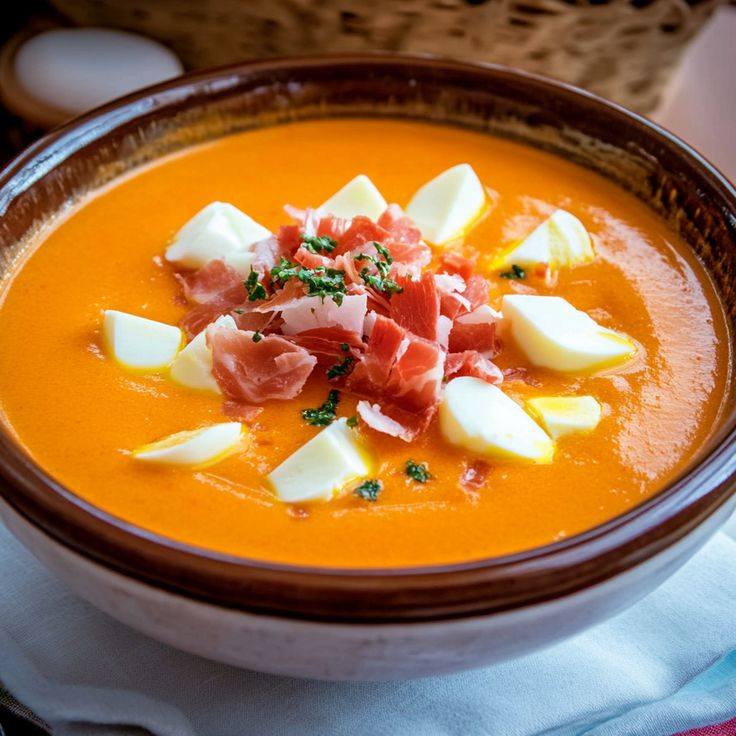

Salmorejo

Ingredientes:
- 200 g de tomates maduros (tipo pera o rama, bien rojos y sabrosos)
- 50 g de pan del día anterior (mejor si es tipo telera o miga consistente)
- 1/2 diente de ajo (o menos si no te gusta muy fuerte)
- 40 ml de aceite de oliva virgen extra (tipo picual o arbequina)
- 1 cucharadita de vinagre de Jerez (opcional, pero le da chispa)
- Sal al gusto
- 1 huevo duro (la mitad o uno pequeño)
- Jamón serrano picado (unos 20-25 g)
Preparación:
- Lava y trocea los tomates, sin pelar si tienes batidora potente (si no, puedes escaldarlos para pelarlos fácilmente).
- Tritúralos bien hasta que estén completamente líquidos.
- Cuela el tomate con un colador fino para eliminar pieles y semillas (esto da textura sedosa).
- Añade el pan troceado, el ajo, la sal y un chorrito de vinagre. Deja que el pan se empape unos minutos.
- Tritura de nuevo hasta que esté todo integrado y muy cremoso.
- Incorpora el aceite en hilo mientras sigues batiendo, para que emulsione bien y quede con cuerpo.